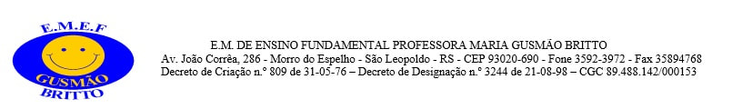

Normas Escolares
- Solicitamos que observem os horários estabelecidos. O portão será aberto somente 10 (dez) minutos antes do início das aulas (7:20h - Manhã / 13:05h - Tarde).
- A infrequência poderá invalidar o ano letivo de seu (sua) filho (a).
- No recreio e nas atividades extra classe, as salas permanecerão chaveadas, portanto, o aluno não poderá permanecer nem na sala, nem nos corredores.
- Se, por motivo de força maior, o aluno ficar ausente das aulas por mais de dois dias, os pais ou responsáveis devem comunicar a Escola, justificar sua ausência e responsabilizarem-se em colocar a matéria em dia.
- O aluno que, eventualmente, chegar atrasado, deverá dirigir-se à sala da Coordenação onde a Professora registrará seu atraso. O mesmo ocorrerá no retorno do recreio. Salientamos que após três atrasos, os pais serão chamados para esclarecimentos.
- O aluno que, por motivo de força maior, faltar às avaliações, deverá justificar-se, no prazo máximo de dois dias úteis, através de Atestado Médico ou com a presença do responsável.
- Os trabalhos escolares solicitados pelos professores somente serão aceitos na data marcada e não terão recuperação, exceto se houver apresentação de Atestado Médico.
- Zelar pelo patrimônio da Escola é dever e responsabilidade dos alunos, professores e funcionários, assim como a limpeza e higiene das dependências da Escola. Portanto, o aluno que lesar o patrimônio público (mesas, cadeiras, paredes, vidros, cortinas, etc), será responsabilizado pelo reparo.
- Em caso de doença, o aluno deverá permanecer em casa, pois a Escola não é autorizada a ministrar medicamentos.
- Cada professor tem seu horário de planejamento e de atendimento aos pais, portanto, devem certificar-se deste horário e respeitá-lo, agendando seu atendimento sempre que considerarem necessário, por telefone ou por bilhetes.
- O aluno com problema de saúde deverá apresentar Atestado Médico na Secretaria da Escola e, somente será dispensado das aulas práticas de Educação Física mediante comprovação médica.
- O uso do uniforme é diário e obrigatório para todos, inclusive durante a realização de atividades extra classe. Quando o aluno comparecer à Escola sem o uniforme, os pais deverão trazê-lo.
- Não serão permitidas vestimentas inadequadas no estabelecimento de ensino (inclusive camisetas, calças e abrigos de times esportivos), bem como minissaias, miniblusas, shorts e camisetas customizadas.
- O uso de celulares e aparelhos eletrônicos (MP3, MP4 e similares), somente será permitido quando utilizado como ferramenta pedagógica e com autorização do professor. A Escola não se responsabilizará pela segurança destes aparelhos e demais pertences (perdas, estragos, furtos, extravios, etc).
- É proibido o uso de boné e de capuz nas dependências da Escola.
- Ao participar dos encontros extra classe, oferecidos pela Escola, os pais e os alunos deverão observar e cumprir os horários estabelecidos, não sendo permitida a permanência na Escola fora do seu horário. O aluno que desrespeitar constantement e as normas escolares, só poderá participar destes encontros com a presença de um responsável.
- Sempre que ocorrerem imprevistos na Escola e/ou na sala de aula, os pais poderão dirigir-se à Escola, respeitando sempre o primeiro contato com os professores (no horário de atendimento), em seguida dirigindo-se à Supervisão Escolar e, em último caso, se ainda houver necessidade, à Direção.
- O aluno deve manter atitude respeitosa e de cooperação com a Equipe Diretiva, Professores, Funcionários e Colegas, evitando palavrões, brincadeiras violentas e inadequadas, brigas ou qualquer comportamento não condizente com o ambiente escolar.
- É responsabilidade dos pais e/ou responsáveis o comparecimento à Escola, sempre que houver chamamento dos professores.
- Os objetos e/ou roupas perdidas na Escola, quando encontradas, serão encaminhadas à Secretaria e ficarão a disposição do aluno e/ou de seu responsável por 30 (trinta) dias. Após este período, serão encaminhados para doação.